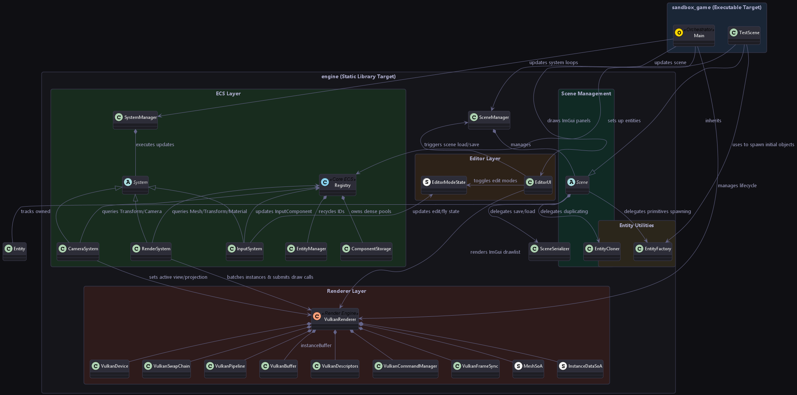

Loading...
Searching...
No Matches
Vulkan ECS Game Engine Prototype


A high-performance C++20 game engine prototype showcasing a custom Entity-Component System (ECS), a modular Vulkan rendering pipeline, and an interactive editor interface. Designed with memory alignment and cache-locality in mind, it utilizes contiguous storage pools, structure-of-arrays optimization, and dynamic shader-instancing.
Architecture Overview
The engine maintains a clean architectural separation between system layers. Bootstrap and lifecycle events are driven by a single-threaded main loop that delegates updates to independent systems and coordinates frame synchronization on the GPU.

System Architecture
For a comprehensive explanation of execution flow and frame sequence, see the Architecture Guide.
Key Features
- Custom ECS Backend: Built from scratch using template-based queries, generational entity recycling, and dense component arrays. Incorporates the cache-friendly Swap-Remove pattern to keep memory allocations contiguous.
- Read more: ECS Subsystem Guide
- Modular Vulkan Wrapper: Abstracted RAII handles encapsulating Vulkan instances, physical/logical devices, swapchains, buffers, and pipeline states, reducing API verbosity without sacrificing control.
- Read more: Vulkan Renderer Guide
- Dynamic Instancing & Push Constants: Draws grouped mesh batches in singular draws utilizing GPU registers via push constants to push per-instance model matrices and colors, minimizing driver draw call overhead.
- Infinite World Grid: Automatically generates a fading, infinite grid plane centered on the camera position via vertex-quad shader interpolation.
- WYSIWYG Interactive Editor: Integrated Dear ImGui overlay providing inline entity renaming, duplication, and property inspection (position, rotation, scale inputs, color picker, fov sliders, and grid spacing controls).
- Read more: Editor UI & Raycast Picking Guide
- 3D Viewport Gizmos (ImGuizmo): Supports real-time translation, rotation, and scaling directly on selected entities in the 3D viewport, with automatic matrix decomposition back to ECS component transforms.
- Raycast Viewport Picking: Mathematical unprojection of 2D screen-space mouse coordinates to 3D world-space picking rays, resolving bounding sphere intersects to select entities directly in the viewport.
- Generic Scene Serialization: A component-agnostic serialization registry allowing dynamic registration of custom components so they save/load to JSON automatically without modifying core engine logic.
- VRAM Resource Manager & Asset Pipeline: Integrated asset importer utilizing cgltf (glTF models) and stb_image (textures). Features automatic layout transitions, staging upload buffers, 1x1 color fallbacks, and reference caching to avoid duplicate VRAM allocations.
- Application Lifecycle Encapsulation & Standalone Mode: Fully wraps Vulkan/GLFW bootstrapping and tick updates inside an Engine::Application base class. Supports standalone fullscreen play mode and project settings overrides via a simple project.settings configuration.
- Skeletal Animation, 2D Blend Trees & IK Solvers: Linear Blend Skinning (LBS) math executed in Vulkan vertex shaders, Forward Kinematics, analytical 2-bone and FABRIK IK solvers, interactive 1D/2D animation blend trees, custom binary .anim baking pipeline, and direct WASD controller mapping.
- Static Reflection Engine: Uses a custom parser and code generator (reflection_generator) that scans source file annotations to generate static reflection descriptors. This enables automatic JSON serialization and dynamic editor UI property fields without manual code mapping.
- Physics & Animation Showcase Game: An interactive sandbox play mode demonstrating rigid body physics, collision resolution (using SAT and impulses), a fully controllable character utilizing 2D blend trees, and a physics gravity gun script.
- Generic Node Graph Framework: A flexible, reusable visual node graph system featuring customizable node cards, Bezier curve links, an infinite panning canvas, right-side detail panels, event callbacks, and full JSON serialization. Designed to power visual toolsets such as shader editors, dialogue trees, and visual scripting.
- Read more: Node Graph Framework Guide
- Animator Controller & Timeline Editors: Unity-like visual state machine editor for designing locomotion state graphs, 1D/2D blend trees, parameters, and transition rules (>, <, ==), plus a timeline Animation Editor with static reflection property inspection and manual keyframe recording.
- Read more: Animator Controller Editor Guide
Detailed Subsystem Guides
To understand the engineering behind this prototype, explore the detailed documentation:
- System Architecture: Bootstrapping, game loop, frame lifecycle sequences, and layer boundaries.
- Custom ECS Engine: Registry, EntityManager, dense ComponentStorage vectors, swap-remove mechanics, compile-time views, and Structure of Arrays (SoA) memory optimizations.
- Vulkan Graphics Pipeline: Custom API wrappers, double-buffered frame synchronization (fences/semaphores), pipeline assembly, instanced drawing batch loop, and push constant parameters.
- Editor UI & Viewport Raycasting: ImGui backend integration, viewport coordinate translation math (unprojecting NDC space), ray-sphere intersection solver, timeline animation editor, and JSON scene parser.
- Skeletal Animation & Skinning: Linear Blend Skinning (LBS) math, keyframe translation/rotation (SLERP) interpolation, hierarchical forward kinematics (FK), 1D and 2D Freeform Cartesian blend trees, and Inverse Kinematics (IK) solvers.
- Static Reflection & Serialization: Compile-time pre-processor code generator parsing source annotations, static type descriptors, automatic scene serialization, and dynamic ImGui property drawers.
- Node Graph Framework: Architecture, data structures (NodeGraph, Node, NodePin), infinite grid canvas rendering, built-in right-side detail panel, event callbacks, and JSON serialization.
- Animator Controller Editor: Visual state machine nodes (Entry, Any State, State, Blend Tree), 1D/2D blend tree threshold bar, parameter manager, and transition condition evaluation.
Getting Started
Hardware & System Requirements
- Operating System: Windows 10/11
- Vulkan SDK: Vulkan SDK 1.3+ installed on the host system.
- Compiler: C++20 compliant compiler (MSVC 2022, GCC 11+, or Clang 13+).
- Build System: CMake 3.20+.
Dependency Management
Dependencies are managed automatically through the CMake configuration:
- Vulkan SDK: Located dynamically on the host system using the find_package(Vulkan) module (relies on the standard VULKAN_SDK environment variable set during installation).
- GLFW & GLM: Fetched and configured automatically during the CMake configure step via FetchContent. No manual installation or directory setups are required.
- ImGui & ImGuizmo: Bundled in third_party/ and compiled automatically as static libraries.
Setup & Compilation
The project is structured with a clean architectural separation between the Engine SDK and game-specific targets:
- Engine SDK: Compiled once, producing a packaged SDK at ./sdk/ with public headers, DLLs, pre-built static libraries (GLFW, GLM, ImGui, ImGuizmo), and EngineConfig.cmake.
- Game Project: A completely standalone CMake project that references the pre-built Engine SDK (no engine source compilation required).
- Clone the Repository: bash git clone https://github.com/tristepin222/Cpp-GameEngine-Prototype.git cd Cpp-GameEngine-Prototype
- Configure and Build: You can build the entire project (SDK + game) using the main utility script at the repository root: ```bash
Automatically builds the Engine SDK first, then compiles the game
build.bat
Fresh configuration: clean all build & SDK folders and rebuild
build.bat –clean
Compile everything and launch the game immediately
build.bat –run ```
Packaging a Standalone Game
Just like in Unity, you can package a standalone, redistributable build of your game directly within the editor's interface:
- Open your project in the editor: .\sdk\editor.exe sandbox_game
- Open the Build Settings panel in the editor.
- Set your target Build Output Path (e.g. sandbox_game/build/Test/).
- Click Build Game. The build system will package:
- The headless game runtime executable (game.exe, which runs your startup scene without any editor UI).
- The core engine binary (engine.dll) and active plugin DLLs (like plugins/cinemachine_plugin.dll).
- Compiled built-in shaders (shaders/).
- Your project's assets, scenes, and settings (assets/, scenes/, and project.settings).
- Open the target directory and run game.exe to play the standalone game.
Alternatively, you can manually build the standalone game from the command line:
# Build the Sandbox Game standalone (requires the SDK to be built first)
build_game.bat
For manual CMake execution (from the repository root):
# Configure and build the Game (referencing the SDK)
cmake -S sandbox_game -B build_game -DCMAKE_BUILD_TYPE=Release -DENGINE_SDK_PATH="./sdk"
cmake --build build_game --config Release
- Run the Game: The standalone game binary, asset directories, and compiled shaders are located in the build_game/ output directory. Run the game using: bash ./build_game/Release/game.exe
Generating API Documentation
The codebase is fully documented using Doxygen-compliant comments. To compile the interactive HTML documentation site:
- Ensure Doxygen is installed and available in the system PATH.
- Run the following command at the repository root: doxygen Doxyfile
- Open docs/html/index.html in any browser to inspect the full class hierarchies and documented members.
Visual Studio / CLion Users: Open the repository root folder directly in an IDE (via File -> Open -> Folder). Visual Studio will automatically detect the CMake project. To work on the game standalone, you can open the sandbox_game folder directly.
Controls Reference
When running the application, switch between editor controls and camera controls:
| Hotkey / Input | Mode | Description |
|---|---|---|
| F Key | All | Toggles between Edit Mode and Fly Mode |
| W, A, S, D | Fly Mode | Moves the camera Forward, Left, Backward, and Right |
| Q, E | Fly Mode | Moves the camera vertically Down and Up |
| Mouse Drag | Fly Mode | Rotates the camera view (look around) |
| Mouse Hover | Edit Mode | Interact with ImGui hierarchy, inspector panels, and debug window |
| Mouse Left-Click | Edit Mode | Click on 3D objects in the viewport to select them |
| Gizmo Handles | Edit Mode | Grab and drag the ImGuizmo axes to translate objects in real-time |